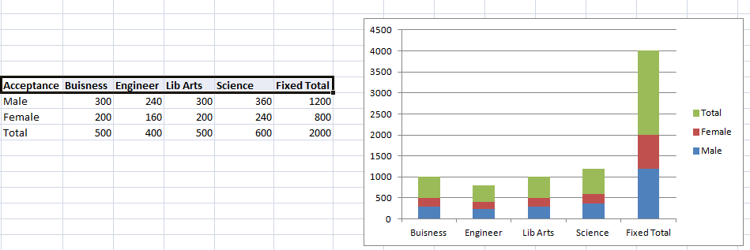

Homogeneity This assumption is met when the distributions have almost similar variances (the spread of the data).
Examples:
Example 1:homoscedasticity is where the variances along the line of best fit remain similar as you move along the line. Whilst we explain more about what this means and how to assess the homoscedasticity of your data in our enhanced linear regression line, take a look at the two scatterplots below, which provide two simple examples: one of data that meets this assumption and one that fails the assumption.

Note:When you analyse your own data, you will be lucky if your scatterplot looks like either of the two above. Whilst these help to illustrate the differences in data that meets or violates the assumption of homoscedasticity, real-world data is often a lot more messy.
Example 2: Male vs Female applicants - College Acceptance Are males and females distributed equally among the various schools?
Here in this example they are equally distributed and thus homogeneity holds for the above question with Acceptance of Business(25%), Engg(20%), Lib Arts (25%) and Science (30%) for both male and female applicants. The proportion of males accepted into each school is the same as the proportion of females accepted into each school... which therefore happens to equal the proportion of students accepted into each school, regardless of gender. Therefore, we can conclude that males and females are distributed equally among the four schools.

The same study for a different set of data values is as follows :
the proportion of males accepted into each school is different than the proportion of females accepted into each school... and therefore the proportion of students accepted into each school, regardless of gender, is different than the proportion of males and females accepted into each school. Therefore, we can conclude that males and females are not distributed equally among the four schools.